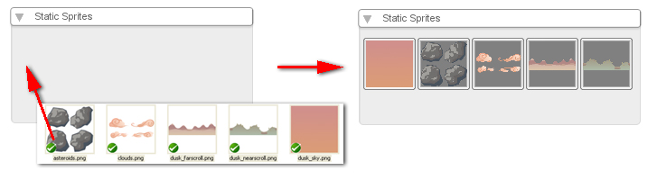
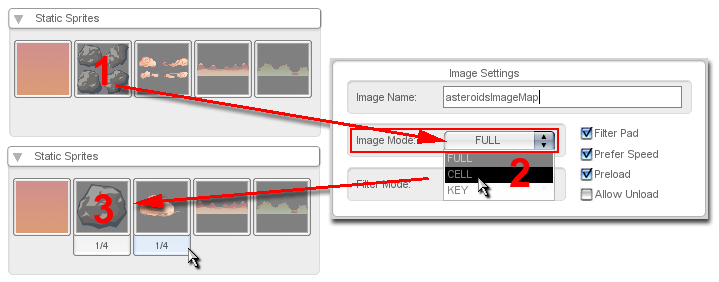

| Image Map
Creation - FULL Images Adding art to your T2D game is as simple as dragging and dropping your graphic files onto the T2D window while it is running. When you drop an image of a supported type on T2D it will be automatically imported into your game's (data/images) path and will be named as an imagemap in your game based on it's filename. 
|
| Image Map
Modification - Celled Images Once you've added art to your project, you may want to specify some graphics as containing more than one image for your game, per file. This is accomplished with a simple three-step process outlined below. 
|